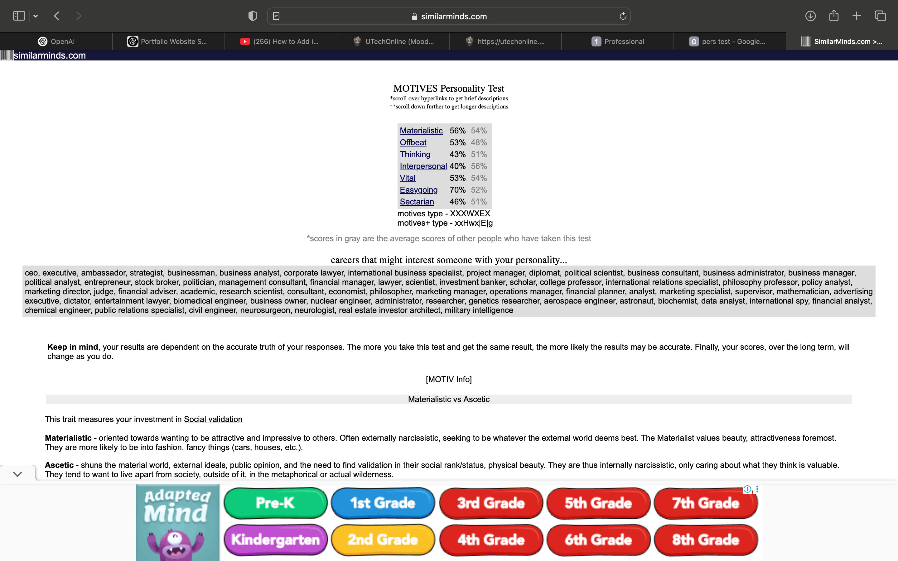

My Strongest Trait
According to the SimilarMinds personality test, one of my strongest traits is Easygoing (70%). This trait helps me stay calm and focused, especially during stressful school periods. Instead of panicking, I approach deadlines and assignments with a clear head, allowing me to stay on track and support my classmates when they need help too.
Personality Test Screenshot
Reflection
The test results were surprisingly accurate. I related most to the Easygoing and Materialistic traits. While I enjoy aesthetic things, I mostly focus on staying grounded, balanced, and helping others around me — especially during group work or class discussions. I think this personality style makes me an empathetic teammate and a reliable student.
My Hero & Quote
My Hero: My mom. She is the strongest person I know — loving, wise, and always supportive no matter what I’m going through.
"It might be long but it won't be forever." – My Mom 🌸
I chose her because she has taught me strength through softness. Her love and determination are the biggest influences on how I approach life and school with compassion and perseverance.